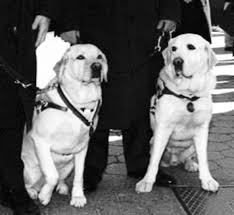
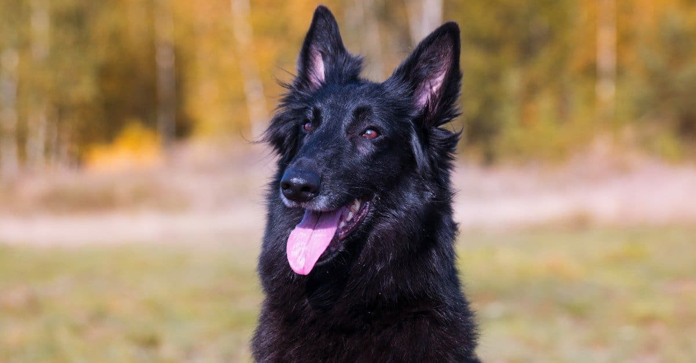

Meet the extraordinary dogs who risked their lives, defied the odds, and proved that bravery has no size limit. These are real stories of real heroes — and they all have four paws. 🐶
Meet the Heroes ↓🌟 Real Heroes, Real Courage
These aren't movie dogs or made-up tales. Every single story below really happened. Grab your snacks — these four-legged legends will blow your mind! 🐾
While hiking with his owner Paula Godwin in the Arizona wilderness, Todd spotted a terrifying danger she couldn't see — a coiled rattlesnake, perfectly camouflaged on the trail, right where Paula was about to step. Without a second's hesitation, Todd leapt in front of her and took the venomous strike directly to his face.
Todd threw himself between Paula and the hidden rattlesnake, absorbing the deadly bite to his own face so his owner wouldn't be harmed.
Todd's face swelled dramatically from the venom. He was rushed to hospital, given antivenom, and made a complete recovery in just 12 hours! Back to tail-wagging! 🐾

🏙️ 9/11 HeroesOn September 11, 2001, when the World Trade Center was attacked, smoke filled stairwells, alarms blared, and thousands panicked. But two guide dogs — Salty and Roselle — stayed completely calm and led their blind owners safely down dozens of floors through the chaos and darkness.
Through smoke and total pandemonium, Salty and Roselle guided their visually impaired owners all the way down the WTC stairwells to safety — saving their lives.
Many think they were Golden Retrievers — but both Salty and Roselle were Yellow Labrador Retrievers. They were awarded the prestigious PDSA Dickin Medal — the animal world's highest military honour!

🫶 Therapy HeroVesper was bred and trained from puppyhood to become a fearsome police dog. She aced every physical test — powerful, intelligent, athletic. She had everything a police force could want, except one tiny detail that ended her law-enforcement career before it even began.
Vesper was rejected from the police force for being "too friendly." Instead of apprehending suspects, she sprinted toward them for cuddles and kisses! 😂
Vesper became a celebrated therapy dog — bringing healing and love to hospitals, schools, and trauma centres. Sometimes the best weapon is a wagging tail. 🐾
🎬 Watch This
You don't need a cape to be a superhero. Watch how a loyal dog stays close to an elderly lady — guiding her, protecting her, and showing what genuine unconditional love looks like in every single moment.
🐕 Incredible Abilities
Dogs aren't just amazing companions — they're life-savers, protectors, and healers working silently every day to keep humans safe.
Dogs detect human scent through 30 feet of snow or rubble. After earthquakes and avalanches, trained rescue dogs have saved thousands of trapped survivors worldwide.
Dogs can smell cancer cells, detect low blood sugar in diabetics, and even predict epileptic seizures minutes before they happen — giving people time to find safety.
Guide dogs give blind people independence and freedom to navigate the world safely — just like Salty and Roselle proved on 9/11, the most dramatic moment in guide dog history.
Military dogs detect explosives and drugs that advanced machines miss. They've saved thousands of soldiers and civilians from hidden, deadly threats around the world.
Petting a dog for just 15 minutes releases oxytocin — the "love hormone" — measurably reducing anxiety, stress, and loneliness. Dogs make us biologically happier!
In Italy, specially trained Newfoundland dogs patrol beaches as official lifeguards and have rescued hundreds of drowning swimmers. Real-life canine lifeguards! 🏊
🧠 The Science of Healing
Scientists have proven what dog lovers always knew: dogs have a genuinely magical effect on human mental health. They lower cortisol (the stress hormone), reduce blood pressure, fight loneliness, and give people purpose. For kids with anxiety, or adults facing depression, a dog can be the most powerful medicine of all.
🧘 Wellness With Dogs
Around the world, programmes harness the healing power of dogs for mental, physical, and emotional wellbeing. Here's what's happening globally:
Yes, Doga is completely real! You do gentle yoga poses alongside and WITH your dog. Studios in New York, London, and Mumbai run Doga sessions. It measurably lowers anxiety for both owner and dog — and it's incredibly fun! 🐕
Certified therapy dogs like Vesper visit hospitals, cancer wards, and children's units. Patients who receive dog visits heal faster, need less pain medication, and experience far less fear during treatment.
Children who struggle with reading sit with a therapy dog and read aloud. Dogs never judge or laugh — they just listen. This programme has improved reading skills and confidence in thousands of children worldwide.
Veterans and trauma survivors work with trained service dogs to learn to trust again and feel safe. The USA's K9s for Warriors programme has helped over 700 veterans with PTSD using rescued dogs.
Service dogs paired with autistic children reduce meltdowns, build communication, and help navigate social situations. Many parents say their child spoke their very first words to their therapy dog.
Dedicated therapy centres from India to Canada use structured dog interactions to treat depression, OCD, and social anxiety. Programmes like "Paws for People" have touched millions of lives globally.
"Dogs do not make us human. They remind us that we already are." — A truth every dog already knows in their heart 🐾
You've read the stories — now prove you know them! 8 questions, one mission: become the Ultimate Dog Hero Expert. Can you ace it? 🏆